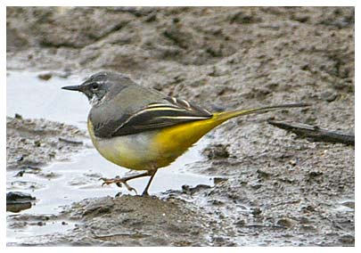

Grey Wagtail

1936 - "Often a pair present".
1971 - Recorded.
1979 - Pair bred.
1981 - Probably bred.
1982 - Present.
1984 - Single bird present on many dates.
11/04/87 - Single bird.
30/01/88 - Single bird.
14/05/95 - 3 birds, an adult an 2 juveniles.
1996 - 1 or 2 present.
1997 - 2 birds.
06/09/98 - 2 birds. 3 birds on 09/09.
1999 - A single pair at outlet stream during April & May. A single bird regularly seen from September onwards.
2000 - Single bird 27/01 and up to 3 birds through the autumn
2001 - Often single bird but up to 3 throughout the year
2002 - Up to 5 throughout the year with 2 juveniles on 11/08
2003 - Often single bird but up to 4 throughout the year
2004 - Often single bird but up to 4 throughout the year
2005 - Often 1 or 2 but up to 3 throughout the year
2006 - Often single but up to 3 throughout the year
2007 - Often 1 or 2 but up to 4 throughout the year
2008 - Often 1 or 2 with 2 immature birds on 12/07/08
2009 - One to four through the year
2010 - One or two through the year
2011 - One or two through the year with 3 on 27/07 and a family party of 5 on 22/08
2012 - One or two through the year with 4 on 26/05
2013 - 1-3 recorded on 35 dates, mostly after July
2014 - 1-2 recorded on 24 dates. None between mid March and mid June
2015 - 1-3 recorded on 33 dates. 1 with 2 young on 13/06
2016 - 1-2 recorded on 32 dates. Young bird seen on 10/05 and adult with food at south end on 08/06
2017 - 1-4 recorded on 36 dates. Female seen with young on 22/05
2018 - 1-3 recorded on 28 dates
2019 - Mostly 1-2 recorded on 44 dates. High counts of 4 on 28/02 and 21/09
2020 - 1 or 2 recorded on 36 dates. Nesting material carried just outside the area by the dam
2021 - 1 -3 recorded on 28 dates. Pair with food seen on 27/04
2022 - 1-4 recorded on 23 dates
2023 - 1-5 recorded on 24 dates. Singing on 02/03. Max 5 on 09/09
2024 - 1-2 recorded on 35 dates. At least 1 young fledged bird being fed at north end on 02/07
2025 - 1-2 recorded on 24 dates, mostly at the northern dam end